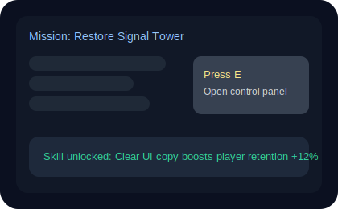
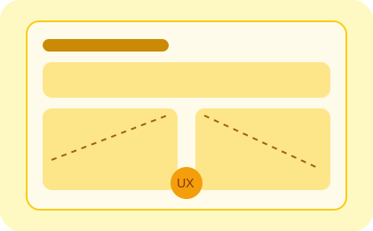

TikTok “How-To” Videos
Short-form instruction that explains how to edit a photo, fix something, or use a feature quickly and clearly.

Discover Technical Communication at Sam Houston State University through examples you already use every day.
If you've ever watched a how-to video, followed a diagram, read game UI text, or used a clean app interface, you've already experienced Technical Communication.
Short-form instruction that explains how to edit a photo, fix something, or use a feature quickly and clearly.
Wordless diagrams, icons, and step-by-step logic that help people assemble furniture around the world.

Text that guides players through missions, controls, and progression in fast, intuitive ways.
Teams collect user feedback and redesign confusing experiences so apps become simpler and better.
Clean interfaces from major brands rely on content strategy, UX writing, and information design.

Step-by-step guides, onboarding walkthroughs, and FAQ content help users solve problems quickly without frustration.

It's the field that connects technology with humans. It's a big umbrella with many career paths.